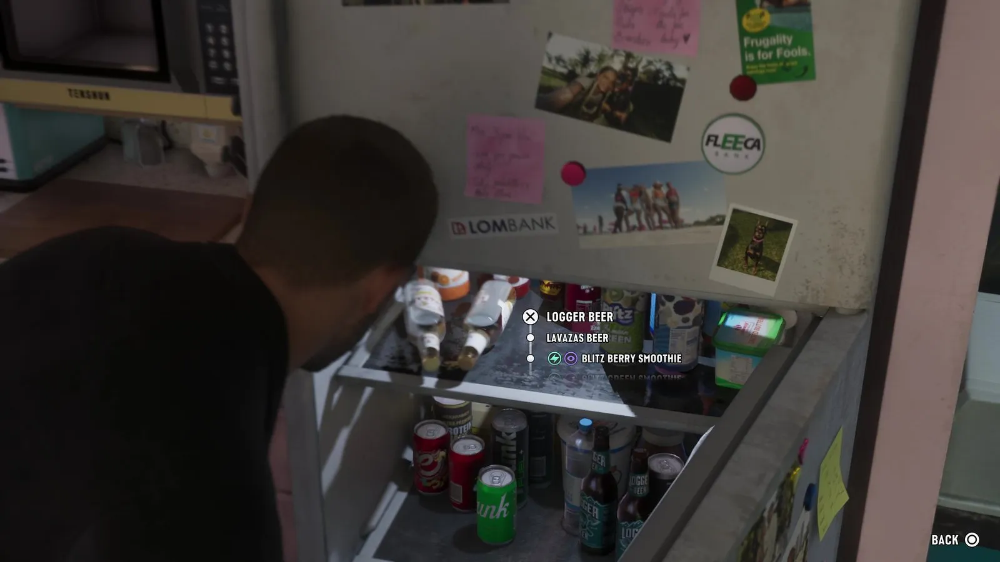
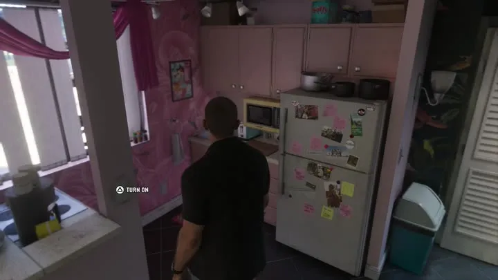
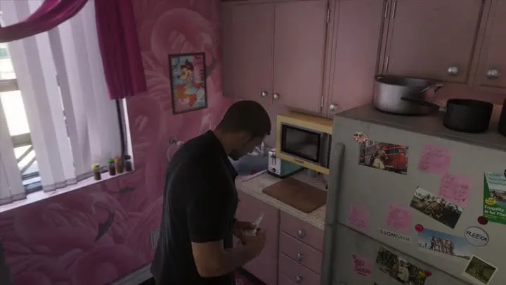

Холодильник и напитки в GTA 6
Обновлено:

Холодильник в GTA 6 — отдельное действие с меню: можно выбрать пиво или смузи.
- Меню выбора напитка.
- Микроволновка Tenshun.
Подробно
На 07:16 «Расширенного показа» Джейсон подходит к холодильнику на розовой кухне. Появляется меню: пиво Logger и Lavazas, смузи Blitz. На той же кухне — микроволновка марки Tenshun, на холодильнике магниты Fleeca и Lombank.
Холодильник из GTA 5
Холодильник с напитками в «Расширенном показе» фанаты сразу сравнили с GTA 5: та же раскладка банок, те же бренды-пародии. Это пример того, как Rockstar переносит между играми мелкие ассеты. Напитки и еда в GTA 6 не просто декорация: по данным Edge, еда лечит, а переедание добавляет вес.
Частые вопросы
Что даёт еда в GTA 6?
Восстанавливает здоровье; переедание — лишний вес (Edge).
Бытовые мелочи — большая деталь
В «Расширенном показе» у холодильника появляется меню: можно взять пиво или смузи. Рядом на кухне — микроволновка Tenshun. Такие мелочи показывают, насколько GTA 6 «бытовая»: герои живут в квартире, едят, пьют и отдыхают. По данным Edge, еда восстанавливает здоровье, а если переедать — герой набирает вес; в спортзале можно накачаться. Это возвращение идей из GTA San Andreas (2004), где у Си-Джея были шкалы жира и мышц.
Отсылка к GTA 5
Фанаты сразу заметили: холодильник с напитками почти дословно повторяет холодильник из GTA 5 — та же раскладка, те же пародийные бренды. Rockstar часто переносит мелкие предметы между играми, и поиск таких «переездов» — любимая игра фанатов.
| Что | Где | Зачем |
|---|---|---|
| Пиво, смузи | Холодильник | Восстанавливают здоровье (Edge: еда лечит) |
| Микроволновка Tenshun | Кухня | Бренд-пародия мира GTA |
| Переедание | — | Набор веса (Edge) |
Что проверим после релиза
- Есть ли у напитков эффекты (опьянение, бодрость).
- Влияет ли вес на бег и драки.
Кадры


Где посмотреть
Таймкоды — чтобы найти момент в официальном видео Rockstar.
| Где | Что в кадре |
|---|---|
| «Расширенный показ», 07:18 | Меню холодильника |
| «Расширенный показ», 07:16 | Кухня |
| «Расширенный показ», 07:21 | Микроволновка Tenshun |
На этой странице также: Tenshun (Бренды и заведения).
Кадры и названия: Rockstar Games — трейлеры GTA VI, «Расширенный показ» (An Extended Look), официальные скриншоты. После релиза 19 ноября 2026 года дополним страницу данными из игры.
Каждый день — одно сравнение: кадр игры рядом с реальным фото. Подписывайтесь:
YouTubeInstagramTikTok